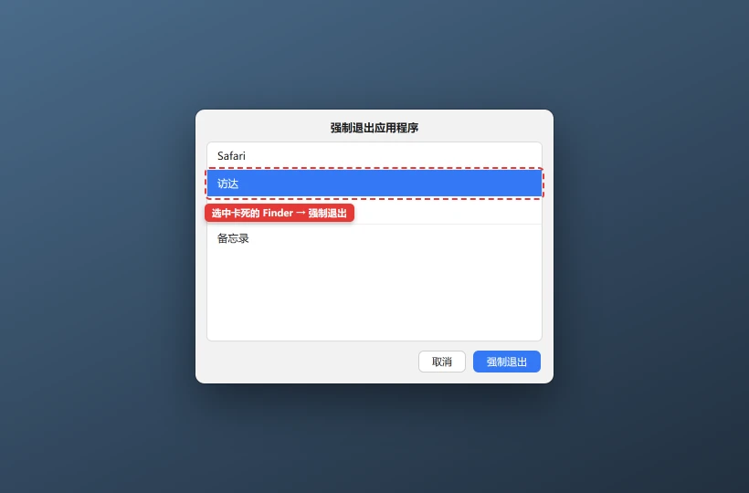

Mac Finder 卡死 / 一直转圈怎么修
重启 Finder 只会关闭桌面和访达窗口，不会删除文件；未保存的编辑仍可能丢失。涉及外接盘修复前，先停止写入并备份重要数据。
💡 一句话结论
Finder 卡死先看范围：打开任何文件夹都转圈，通常是 Finder 或系统外壳卡住；只有某个外接盘、网络卷或 iCloud 目录卡住，问题在对应存储。先安全重启 Finder，再逐个挂载磁盘排查，不要一上来抹掉硬盘。
⚡ 30 秒快速排查（先试这个）
- 按住
Option键，右键 Dock 上的 Finder 图标，点“重新启动”。 - 拔掉最近接入的 U 盘、移动硬盘、读卡器和扩展坞，再打开“下载”或“文稿”文件夹。
- 按
Command+Option+Esc打开强制退出，确认是否只有 Finder 显示“未响应”。
适用 / 不适用
适用：
- Finder 窗口一直转圈，但其他应用还能操作
- 桌面图标点不动、右键菜单不出现
- 打开外接盘或网络共享时 Finder 卡住
- iCloud Drive 某个目录长时间加载
不适用：
- 整台 Mac 都卡、鼠标也卡 → 检查 CPU、内存和磁盘
- 外接盘完全不出现在访达或磁盘工具 → 先查线材、接口和供电
- 开机后 Finder 根本进不了桌面 → 先处理系统启动故障
- 文件其实已经被删除 → Finder 重启不能恢复数据
开始前确认
- 记录卡住前最后打开的是本机盘、外接盘还是网络共享
- 停止向异常外接盘复制文件
- 有重要数据时先备份，不要急着运行“修复磁盘”
- 知道 Mac 管理员密码
怎么确认修好了
Finder 能连续打开本机磁盘、下载、文稿和 iCloud Drive 四个位置；打开、复制、重命名文件都能立即响应；重新挂载外接盘后不转圈；重启 Mac 后桌面图标仍正常。
还是不行？
- Spotlight 同时搜不到文件 → Mac 聚焦搜索不工作
- 外接显示器也不识别 → Mac 外接显示器 / 扩展坞不识别
- 磁盘空间长期不足 → Mac 储存空间不足怎么清理
- U 盘在 Windows 也无法识别 → U 盘 / 移动硬盘不识别
- 磁盘有异响或急救反复报错 → 停止写入，优先备份与专业检测
预防
- 拔外接盘前先在 Finder 中推出，避免文件系统写入中断。
- 使用质量可靠的线材和有独立供电的扩展坞。
- iCloud 和云盘同步异常时，先确认文件是否已经下载到本机。
- 定期备份，磁盘出现异常后不要连续“急救”或格式化试运气。
更新日志
| 日期 | 版本 | 变更 | 作者/审核 |
|---|---|---|---|
| 2026-10-27 | 1.0 | 首版：Finder 重启、外接盘、iCloud、磁盘急救与登录项排查 | 内容组 |
分步骤
只重启 Finder
目的：Finder 是独立进程，重启通常不会影响其他应用。
操作：

快捷键 Option + Command + Esc打开这个窗口，选中「访达」点「强制退出」。桌面和 Finder 窗口消失一两秒后会自动重建，不会关闭你其他的应用。- 按住
Option键，右键 Dock 上的 Finder →“重新启动”。 - 或在终端运行：
killall Finder- 等待桌面图标和 Finder 窗口重新出现。
预期结果：Finder 菜单、窗口和桌面恢复响应。失败怎么办？
几秒后马上再次卡死 → 继续步骤 2；终端提示没有进程也不影响，说明 Finder 已经崩溃并正在自动重启。- 按住
逐个排除外接盘和网络卷
目的：损坏文件系统、供电不足或网络共享掉线会把 Finder 卡在等待状态。
操作：
- 先推出能正常响应的外接盘；不能正常推出的，关机后再拔。
- 拔掉所有非必要 USB 设备，只保留键盘鼠标。
- 依次重新接入设备，每接一个就打开其文件夹测试。
- 网络共享卡住时，在 Finder 菜单选择“前往 → 连接服务器”，不要反复挂载同一地址。
预期结果：找到导致卡顿的具体磁盘或扩展坞。失败怎么办？
接入某盘立即复现 → 先备份；无法读取且数据重要 → 停止反复通电，咨询数据恢复服务。检查 iCloud Drive 与云端文件
目的：网络中断时，云端占位文件可能让目录长时间加载。
操作：
- 打开系统设置 → Apple 账户 → iCloud，确认 iCloud Drive 状态正常。
- 拔掉异常网络、关闭 VPN 或代理后，再打开 iCloud Drive 测试。
- 右键需要离线使用的文件或文件夹，选择“立即下载”，等待下载完成。
- 不要在不了解同步状态时直接删除云端目录。
预期结果：iCloud Drive 能显示目录，已下载文件可离线打开。失败怎么办？
提示账户验证失败 → 先修 Apple 账户登录；只有某个共享文件夹异常 → 请共享者重新授权。用磁盘工具检查只读问题
目的：确认磁盘格式、挂载状态和文件系统错误，但要避免直接抹盘。
操作：
- 打开“磁盘工具”。
- 左侧选择异常磁盘的卷，先点“信息”确认容量和文件系统。
- 在确认已有备份且磁盘可以访问时，运行“急救”。
- 急救期间不要拔线。报告“宗卷似乎没有问题”即可。
预期结果：磁盘完成挂载，Finder 能打开目录，急救没有发现严重错误。失败怎么办？
急救报文件系统损坏 → 先备份可读文件；提示需要重新格式化 → 未备份前不要抹盘。排除登录项与系统扩展
目的：云盘、安全、外设管理工具会在 Finder 中加载扩展，异常时会拖死窗口。
操作：
- 系统设置 → 通用 → 登录项与扩展，记录并临时关闭第三方云盘、外设和清理工具。
- 重启 Mac，观察 Finder 是否正常。
- 逐个恢复登录项，找出复现问题的那一个。
- 更新或卸载问题软件，不安装来路不明的 Finder 扩展。
预期结果：关闭某个软件后 Finder 稳定，重新开启可准确复现。失败怎么办？
全部关闭仍卡死 → 进入安全模式测试，并检查磁盘空间和系统更新。
相关教程
最后更新：2026-10-27 · 复核：内容组
读者反馈
这篇教程解决你的问题了吗？
点一下告诉我们结果。「没解决」可以指出问题段落，管理员会回到原文核对并更新。